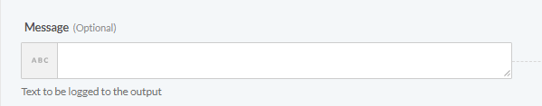
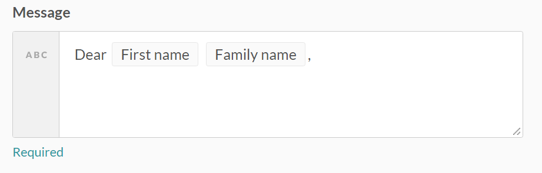
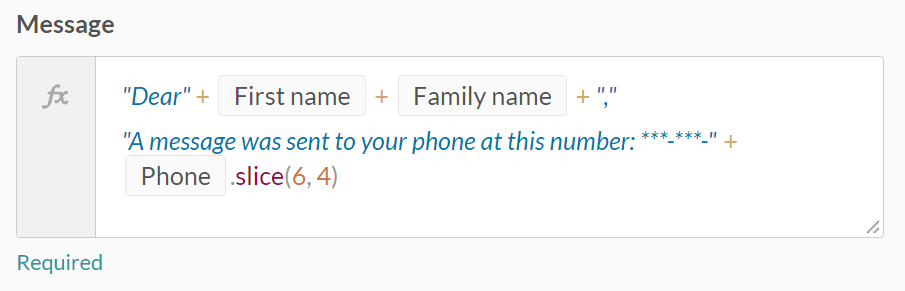
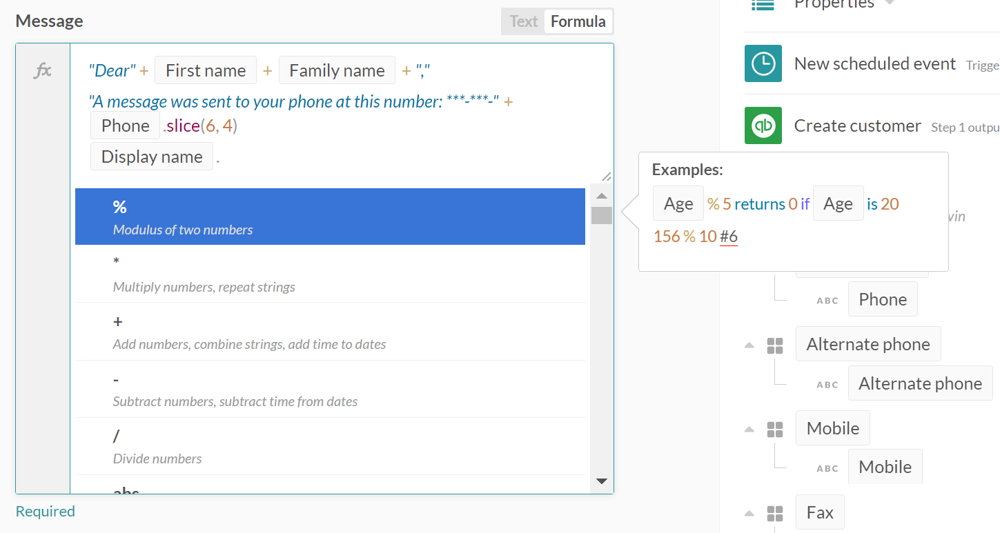
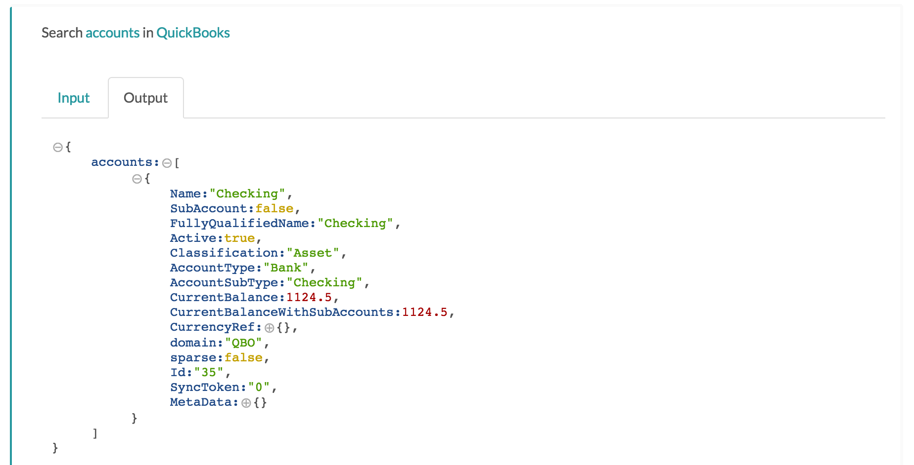
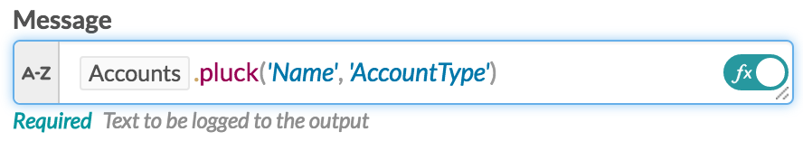

Formulas
Formula mode is a toggled mode for almost any input field in Workato, allowing you to make use of special formulas to transform and manpiulate data according to your exact needs. When you are defining the input for a field, you can be in Text mode or Formula mode, indicated by the box at the right of the field. You can toggle between the two modes by hovering your cursor over the top right hand corner of a field and simply clicking on the button.

Text Mode VS Formula Mode
The default is text mode. In text mode you can assign plain text or map any field from the input data you have available to you, and it will appear as the input. In text mode you can add more than one field too, for example you can put first name, and last name next to each other.

Formula Mode on the other hand, allows you to manipulate the data from each field (pill) into a desired format. When you toggle to formula mode, you see a slightly different view of the input field, with some of your text being colored. You will also see the smbol "fx" on the left, to indicate that you are in formula mode. Formula mode allows you to manipulate data within data pills, depending on the command that you have put in. In the example below, we have a command that sends a message to a customer's email to notify them to check their SMS inbox, but only shows the last 4 digits of their phone number by using the ".slice" command. Simply put, we have used a formula mode command to extract the last 4 digits of the data from the pill "Phone"

Dynamic list of formulas
Formula mode accepts operators and methods to transform the data in the input field. You can bring up a simple list of commonly used formula methods by appending a period to the end of your data. The choices will dynamically show up below, and is dependent on the type of the data - number, text, date etc. It also contains a description of what the formula does, with example input and output with regards to the highlighted formula.

Using Ruby ternary syntax in Formula mode to perform conditional statements
When your field is toggled into formula mode, you can make use of ternary syntax from Ruby to perform conditional (if-else) statements. This allows you to use certain data pills under a certain condition, else use a different data pill.
In the example below the invoice date is mapped from a field called 'Date' and is involved in a conditional statement written in ternary syntax. For more information on what ternary syntax in Ruby is, click here.

What is it doing?
- "Date.blank?" is checking to see if the Date is blank.
- The next ? represents the result of the check. If it is true, or false
- The next step 'Job created at' : 'Date' specifies what to do if the result was true or false. For example if it is blank, use 'Job created at' for the value, and if it is not blank use 'Date' Note: If the data in the pill used after ? is also blank (in the above example [Job created at]), you will get an error as well.
Glossary of formulas
You will find that there are formulas that can be used on data pills of different data type - String, Dates, Numbers, Others. That will be the manner which we shall group and elaborate on the list of available formulas. Do note that the glossary list below is in constant update as we frequently add more formulas to accomodate the needs of our users.
String Formulas
Workato formula mode supports many String functions. These are very useful for advanced users, especially when used in conjunction with each other. In the examples below, we will look at some of the methods that can be used to manipulate a string of text, which in this case the input string is 'Jean Marie'.
| Formula | Description | Example | Sample Output | |
|---|---|---|---|---|
| blank? | This function checks the input string and returns true if it does not contain any value. | 'Jean Marie'.blank? | false | |
| include? | This function checks the input string and returns true if it contains the stated keyword. | 'Jean Marie'.include?('Jean') | true | |
| exclude? | This function acts in an opposite manner from include?. It will return true only if the input string does NOT contain the stated keyword. | 'Jean Marie'.exclude?('Jean') | false | |
| match? | This function checks the input string for a particular pattern. It returns true if the pattern is present. | It can be used to check if whether there is any white space within the input string. | 'Jean Marie'.match?(/\s/) | true |
| match? | match? can also be used in a manner similar to include? . This is to check for a stated keyword. | 'Jean Marie'.match?('ie') | true | |
| ends_with? | This function checks the input string on whether it finishes with the stated keyword. | 'Jean Marie'.ends_with?('ie') | true | |
| starts_with? | This function checks the input string on whether it begins with the stated keyword. | 'Jean Marie'.starts_with?('ie') | false | |
| capitalize | This function converts the input string into sentence case, i.e. the first character of each sentence is capitalized. | 'jean MARIE'.capitalize | "Jean marie" | |
| titleize | This function converts the input string into title case, i.e. the first character of each word is capitalized. | 'jean MARIE'.titleize | "Jean Marie" | |
| upcase | This function converts all characters from the input string into upper-case. | 'Jean Marie'.upcase | "JEAN MARIE" | |
| downcase | This function converts all characters from the input string into lower-case. | 'Jean Marie'.downcase | "jean marie" | |
| lstrip | This function (left strip) removes the white space at the beginning of the input string. | 'Jean Marie'.lstrip | "Jean Marie" | |
| rstrip | This function (right strip) removes the white space at the end of the input string. | 'Jean Marie'.rstrip | " Jean Marie" | |
| strip | This function removes the white space at the beginning and the end of the input string. | 'Jean Marie'.strip | "Jean Marie" | |
| strip | strip is also equivalent to using both right and left strip on an input string. | 'Jean Marie'.rstrip.lstrip | "Jean Marie" | |
| length | This function returns the number of characters within an input string, including the white-spaces. | 'Jean Marie'.length | 11 | |
| reverse | This function inverts a string, reordering the characters in a backward manner. | 'Jean Marie'.reverse | "eiraM naeJ" | |
| gsub | This function replaces all occurrence of the first input value, with the second input value, within the string. | 'Jean Marie'.gsub('J', 'M') | "Mean Marie" |
Date Formulas
Dates are quite common elements in data structures. Sometimes the date may not be in the right format, for example it may be sent as a string. Here are some common operators or functions to manipulate dates
| Formula | Description | Example | Sample Output |
|---|---|---|---|
| now | puts todays date and current time | - | - |
| today | puts todays date | - | - |
| to_date | Converts a string to date | '2015/04/20'.to_date | Mon, 20 Apr 2015 |
| to_date(format:'MM/DD/YYYY') | Converts a formatted string to date in the stated format. Refer here for more date formats | '04/20/2015'.to_date(format: 'MM/DD/YYYY') | 04/20/2015 |
| present? | Check to see if a date is present | '2015/04/20'.to_date.present? | true |
| blank? | Check to see if date field is blank | '2015/04/20'.to_date.blank? | false |
Date Arithmetics
We can also make use of certain keywords such as days, months and years to perform date arithmetics to manipulate dates. The table below shows some exmaples of manipulating dates.
| Date Arithmetic | Output |
|---|---|
| '2015/04/20'.to_date + 2.days | Wed, 22 Apr 2015 |
| '2015/04/20'.to_date - 2.days | Sat, 18 Apr 2015 |
| '2015/04/20'.to_date + 2.weeks | Mon, 04 May 2015 |
| '2015/04/20'.to_date - 2.weeks | Mon, 06 Apr 2015 |
| '2015/04/20'.to_date + 2.months | Sat, 20 Jun 2015 |
| '2015/04/20'.to_date - 2.months | Fri, 20 Feb 2015 |
| '2015/04/20'.to_date + 2.years | Thu, 20 Apr 2017 |
| '2015/04/20'.to_date - 2.years | Sat, 20 Apr 2013 |
Note: You may also do the same for minutes and seconds
Getting First/Last days of the current and next month
Using a combination of date formulas, and date arithmetics, we can easily obtain the first and last days of the current and next months.
Beginning of Current Month
Firstly, turn on formula mode and we have access to the .beginning_of_month function. It returns the date for the start of the month for the given date/timestamp.

Beginning of Next Month
To retrieve a date for the beginning of the next month, we simply need to add a month to the input date, and use the previously mentioned function get the beginning of the month.

End of Current or Next Month
While the beginning_of_month function will always give you the 1st day of the month, retrieving the end of the month is a little trickier because some months have 31 days while others have less.
Instead, we can apply some simple arithmetic to obtain the last date of the month.
To retrieve the last date of the current month :
To retrieve the last date of the next month:
Number Formulas
Workato formula mode supports many functions that can be used on numbers. In the examples below, we will look at some of the functions that can be used to manipulate numbers.
Arithmetic Operators on Numbers
If Amount pill's value is 45 and Qty pill's value is 5, the results will be as follows:
| Operator | Description | Example | Sample Output |
|---|---|---|---|
| + | Addition - Adds values on either side of the operator | Amount + Qty | 50 |
| - | Subtraction - Subtracts right hand operand from left hand operand | Amount - Qty | 40 |
| * | Multiplication - Multiplies values on either side of the operator | Amount * Qty | 225 |
| / | Division - Divides left hand operand by right hand operand | Amount / Qty | 9 |
| % | Modulus - Divides left hand operand by right hand operand and returns remainder | Amount % Qty | 0 |
Formulas used on Numbers
| Formula | Description | Example | Sample Output |
|---|---|---|---|
| abs | This function returns the absolute (positive) value of a number. | -45.67.abs | 45.67 |
| blank? | This function checks the input number and returns true if it does not contain any value. | 45.67.blank? | false |
| presence | This function will check the input number, returning its value if there is one present, else returning nil. | 45.67.presence | 45.67 |
| present? | This function will check the input number, returning true if there is a value present, else returning false. | 45.67.present? | true |
| to_i | This function can be used on a number to only take its integer value. | 45.67.to_i | 45 |
| to_f | This function can be used on a number to retain its decimal values. | 45.67.to_f | 45.67 |
| to_s | This function converts a number into a string. | 45.67.to_f | "45.67" |
| round | This function will round up or down a number to the nearest integer. | 45,67.round | 46 |
| round | By adding brackets with a number within it, it will round the number to a float with that number of decimal places. | 45.6789.round(2) | 45.68 |
| to_currency | This function converts a number into a currency string. | 456789.123.to_currency | $456,789.12 |
| to_currency | By adding a parameter with a precision: number within it, it will round the number to a currency string with the stated number of decimal places. | 456789.123.to_currency(Precision: 3) | $456,789.123 |
| to_currency | By adding a parameter with a locale and country code, it will add the appropriate currency symbol. | 456789.123.to_currency(locale: fr) | 456,789.12 € |
| to_phone | This function converts a number into a formatted phone number. | 1235551234.to_phone | 123-555-1234 |
| to_phone | By adding a parameter with area code: true, the first three numbers will be enclosed in brackets, representing the area. | 1235551234.to_phone(area_code: true) | (123) 555-1234 |
| to_phone | By adding a parameter with delimiter: string, the formatted phone number will be separated with the input string. | 1235551234.to_phone(delimiter: " ") | 123 555 1234 |
| to_phone | By adding a parameter with extension: number, the formatted phone number will be appended with x number at the end. | 1235551234.to_phone(extension: 555) | 123-555-1234 x 555 |
| to_phone | By adding a parameter with country_code: number, the formatted phone number will be appending with + number at the beginning. | 1235551234.to_phone(country_code: 1) | +1-123-555-1234 |
Others
Processing Arrays/Lists
When you have a List (a type of Array) returned to you, you may only want specific sets of information. For example, the image below shows the step output for a search accounts action. Here, a List of Account objects is returned containing all of the fields displayed under it (Name, Sub account, etc.) for each Account object. List fields are always marked with the symbol.
!
Formulas to manipulate Lists/Arrays
If you would like to retrieve the account records based on a specific filter condition (e.g. only those which are Active), you can use the where function on the "Accounts" list pill. If you would like to extract certain field values from each account record (e.g. only the Name pills from the list of account records), you can use the pluck function on the "Accounts"" list pill.
Formatting the Results
Do note that using the where or pluck function on the (Accounts) list pill will still return the results in the form of an Array. However, arrays cannot usually be used directly in text fields. You can use additional formulas that convert Arrays into Strings to format the results correctly. Some formulas you can use to do this are: join, smart_join, and to_s.
Pluck Function
The pluck function allows you to pluck desired fields from an array of objects or hashes. This is useful in a few scenarios. The most common use will be described here. Sometimes a step in your recipe (e.g. a search action) may output a List containing many objects. For example, the image below shows the step output for a search accounts action. Here, a List of Account objects is returned containing all of the fields displayed under it (Name, Sub account, etc.) for each Account object. List fields are always marked with the symbol.
!
When you have a List, you may want to extract the values of certain fields from each object within it. Continuing with the search accounts example, pretend you want to know the Name and Account Type for all of the Accounts returned by the search. First, click in the input field where you want to enter this information and turn on formula mode. This will make the List pillable so that you can select it and add it to your field. Now, you can "pluck" any available field from the List you selected and the function will return an array containing the value of that field for each object in the list.
Finding the API Name
The tricky part now is using the correct name to pluck the field. The names displayed for the pills in the step output are not always the correct name to use, especially when the name contains more than one word. Typically, you can get the API name for multiple word fields by removing the spaces and capitalizing each word. For example, a field named "Account type" will typically have the API name "AccountType". However, this is not always the case. To be sure, there are two places you can locate the API name for the field you want.
The first place you can find the API names for a field is the recipe output from a completed job. For example to find names for Account fields, you can look at successful output for any triggers or actions related to Accounts. You can also create a test recipe and search for an Account that you know exists. Here is the recipe job output for the search accounts action that lists all of the fields available by API name:
!
The other place you can find the API names for a field is the actual API for the application you are using. Many APIs will publish the fields available for each object. However, not all APIs are easy to navigate so this method may take some more time and effort.
Using the Pluck Function
Once you know the API names for the fields you want, you can write your formula. The format for the pluck function is as follows: [List Data Pill].pluck('APIname'). If you want to pluck additional fields, simply separate them with a comma: [List Data Pill].pluck('APIname1', 'APIname2', 'APIname3'). Referring back to the current example, the formula to pluck Name and Account Type from the Accounts List would be:
!
Formatting the Results
The pluck function will return fields in the form of an array. However, arrays cannot usually be used directly in text fields. You can use additional formulas that convert Arrays into Strings to format the results correctly. Some formulas you can use to do this are: join, smart_join, and to_s.
Where Function
The where function can be used in combination with other functions (such as pluck) in order to filter information from a List (a type of Array). Since the where function returns an Array (the filtered List), any added function must be able to work with Arrays. The where function is useful when a step in your recipe (e.g. a search action) outputs a List containing many objects. For example, the image below shows the step output for a search accounts action. Here, a List of Account objects is returned containing all of the fields displayed under it (Name, Sub account, etc.) for each Account object. List fields are always marked with the symbol.
!
When you have a List, you can work with it in many ways. For example, you may use the pluck function to extract the values of certain fields from each object within the List. However, in some cases you may want to narrow down the objects you want to work with before applying such a function. You can do this using the where function.
Finding the API Name
Just as with the pluck function, you will need to find the correct API name for a field to use as a filter. The names displayed for the pills in the step output are not always the correct name to use, especially when the name contains more than one word. Typically, you can get the API name for multiple word fields by removing the spaces and capitalizing each word. For example, a field named "Account type" will typically have the API name "AccountType". However, this is not always the case. To be sure, there are two places you can locate the API name for the field you want.
The first place you can find the API names for a field is the recipe output from a completed job. For example to find names for Account fields, you can look at successful output for any triggers or actions related to Accounts. You can also create a test recipe and search for an Account that you know exists. Here is the recipe job output for the search accounts action that lists all of the fields available by API name:
!
The other place you can find the API names for a field is the actual API for the application you are using. Many APIs will publish the fields available for each object. However, not all APIs are easy to navigate so this method may take some more time and effort.
Using the Where Function
Once you know the API names for the fields you want, you can write your formula. The format for the where function is as follows: [List Data Pill].where('APIname': 'filterValue'), simply separate them with a comma: [List Data Pill].where('APIname1': 'filterValue1', 'APIname2': 'filterValue2', 'APIname3': 'filterValue3'). Now you can add the main function you want to use to the end of the where formula. You can add on any formula that works with an Array. The combined formula will return whatever the last formula applied returns. Here is an example using the pluck function:
!
Remember that the pluck function will return an array object, so you will typically need to add on another formula such as to_s that converts an Array to a String.